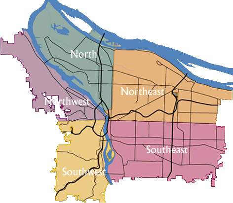

There are five quadrants of Portland, Oregon and 95 officially recognized neighborhoods, each of which is represented by a volunteer-based neighborhood association. These associations serve as the liaison between residents and the city government, as coordinated by the city's Office of Neighborhood Involvement (ONI). The city subsequently provides funding to this "network of neighborhoods" through district coalitions, which are groupings of neighborhood associations.
List of the Quadrants